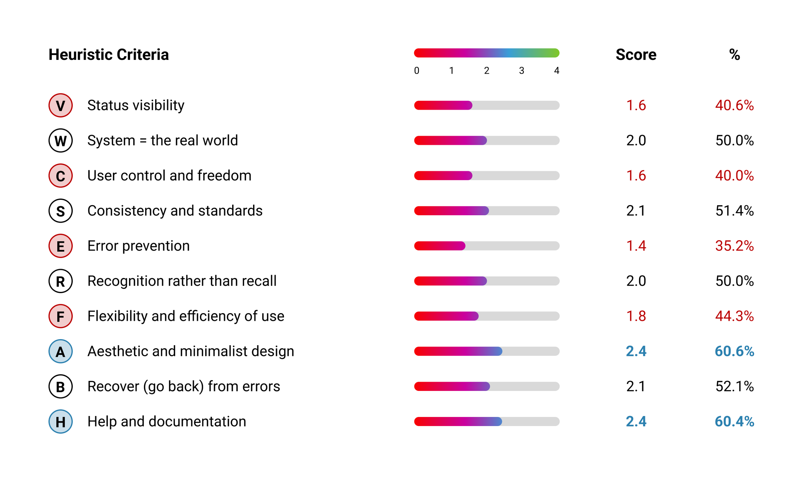

Overview
What is Keysight PWMA?
PathWave Measurement Analytics (PWMA) is a data visualization and analytics software operated by Keysight Technologies.
The primary users are the Test and Design Engineers of Keysight.
Typically, the workflow of the test engineer is the following: capture and simulate the test data, run the physical test, store the results, and then analyze and correlate the results with the help PWMA, the product we are working on.
The project was done as a part of the MHCI Capstone project at UC Santa Cruz with the collaboration with Keysight Technologies. The project aims to enhance the User Experience of an existing tool: PWMA, by understanding target users' needs and behaviors, and provide design recommendations based on the primary and secondary research.

Project Structure
Project Structure
We will start with defining the problem and goal, define our Research Question, and move to the main research with key finings and design recommendations. We also present User Personas and a User Experience Map based on our findings. At the end, we will cover our blockers and limitations that could possibly affect the findings.

Problem
Problem Statement
Users report UX issues with PathWave Measurement Analytics despite its robust capabilities.
Users frequently prefer alternative software like Excel, Tableau, and Spotfire for data analysis and exploration tasks.
Goals
Enhance PWMA's user experience by understanding target users' needs and behaviors.
Identify barriers preventing users from gaining insight through data in PWMA.
Research
Research Questions
We have two research questions that we aim to answer with the research:
Q1: What are the challenges faced by the target users when interacting with PWMA?
How do users perceive the usability and user interface of PWMA compared to alternative tools?
How does the learning curve for PWMA, and does it affect users' preference for using the software?
What are the key features and functionalities users find lacking in PWMA compared to auxiliary software like Tableau and Excel?
What are the specific use cases or scenarios where users prefer to use Tableau or Excel over PWMA?
Q2: What improvements can be made to PWMA to encourage users to adopt it as their primary tool for data visualization and analysis?
What intuitive design principles and data visualization techniques can be applied to PWMA?
How are other tools more efficient in data visualization and outlier detection techniques?
Process
Process
We conducted a literature review and competitive analysis, and based on our secondary research, we found that Keysight Technologies has a unique value proposition.
It brings a combination of hardware and software solutions, different from the contenders like JMP, Spotfire, and Zoho Analytics.
We then focused on understanding the user perception.
We followed a set of research methodologies, which this project covers next.

Main Research Methods
User Interviews
Our first approach was to conduct user interviews.
Remote via Zoom. Internal Keysight Participants.
Recruitment
Since PWMA is an internal product, we recruited internal users from Keysight, and their selection was based on their experience and time spent on PWMA.
Sponsor-student meetings directed the project goals.
Participants facilitated by sponsors.
Participants were selected based on experience & time spent with PWMA, education background, and role within the company.
Interview Sessions
Overall, we conducted 8 interview sessions with 5 internal users.
We had two interview rounds: a screener round to gauge the user issues and an observation round, where we asked the user to share their screen on Zoom and walk us through their tasks and features where they may have encountered problems.
Screener Round — 30 mins of individual interviews with 5 participants. Semi-structured questions.
Observation Round — 60 mins of individual interviews with 3 participants. Task flow questions followed by observing the user's interaction with the tool.
Thematic Analysis
Thematic Analysis
After conducting the interviews and gathering the transcripts it was time to analyze them and come up with some major categories of the user's pain points to find the most common problems they had with the tool.
Below is the list of categories we used to code the interview transcripts together with the number of occurrence in our analysis.

Later, we narrowed the categories down to come up with key findings and turn those into feasible design recommendations. The ones with the most received complaints were feature-specific challenges, intuitiveness problems, and lack of accessibility features.
Usability Evaluation
Heuristic Evaluation Results
First, Heuristic Evaluation (HE) assesses a product's interface to detect usability issues and identify ways to resolve them. We used 10 heuristic criteria based on Nielsen's HE Principles.
Conducted by two team evaluators. Followed a scoring scale of 0-4. Each score explains the severity of the usability of the tool.
The HE helped us identify and prioritize the core usability issues. Further, the HE process reconfirmed and justified the issues identified by the interview participants. The HE and the secondary research and interviews would guide us in identifying the design goals of PWMA in the future.

Based on our evaluation, PWMA has a low usability score for Status Visibility, User Control, Error Prevention, and Flexibility.
The overall usability score is 1.9, which is below 50%.
The visualization below demonstrates that to get the final scores for each principle, we have performed two separate evaluations and aggregated the results at the end.


Key Findings
01: Feature-Specific Challenges
This theme focuses on: Identifying and addressing specific challenges related to the features and functionalities of the PWMA. Gaining insights into the usability, effectiveness, and user satisfaction with different features and their associated interactions. Analyzes the performance of the features, task completion steps, the application feedback on each step, and the effectiveness of visualizations.
Here are some quotes from our Interview participants, where they mention that it takes bunch of clicks to create a chart, and the chart you get at the end is not what you wanted.
"… you just did a bunch of clicks and potentially waited five seconds or something for the chart to load, and then you don't have the chart you want."
— Participant 4Some of the participants talked about how the tool automatically errors out instead of allowing them to prevent the errors. Participant 5 mentions how confusing it is to have data being loaded with no indication.
"It takes time to load the data on the table view and that's really confusing for the user to figure out some processes going on at the back at the backend."
— Participant 5Recommendations
Hence, we developed some initial recommendations for the first set of findings. One of them is to change the structure of the interface and the navigation of the app. Then, work on improving the error prevention and the system feedback. And lastly, improve the way PWMA communicates the current state, the progress, and the loading of its processes.

Key Findings
02: Intuitiveness
Our second key finding concerns UI intuitiveness - the ease with which users understand and navigate an interface without extensive guidelines.
This theme focuses on: Identifying intuitiveness challenges when interacting with the PWMA interface. Identify if the task completion flow matches the mental model of the same tasks in other analytics tools.
Users approach our software with prior knowledge, expecting familiar elements like shapes, positioning, and interaction patterns to function as usual. We examined two areas of this intuition: general interaction with modern GUIs and more specific interaction with other data visualization software relevant to our target users.
Based on our findings, one instance of a user's intuition with a GUI not working is that the users expect a click-and-drag across a chart to select values, as experienced in browsers or Excel. However, in the charts of PWMA, this action results in zooming in, contradicting the user's expectation.
"My intuition, my usual user experience says to me that when I click on the graph, the cursor here will be used as a selection tool, but instead of that, it works as the zoom cursor."
— Participant 1Besides the overall user interface, users also possess specific expectations for software designed for particular purposes. For example, when utilizing our software for data visualization, they anticipate similar interaction methods found in programs like Excel or Spotfire. This explains why some interview participants found it challenging to create a chart.
"Plotting of one parameter versus versus another parameter… It was not intuitive for me."
— Participant 2Recommendations
According to our discoveries, we recommend two improvements: follow existing user experience standards—if something appears clickable, confirm it is indeed clickable. Additionally, design a user interface that aligns with the user's understanding instead of imposing unfamiliar habits.

Key Findings
03: Accessibility
This theme focuses on: Addressing accessibility issues that prevent users from fully engaging with the software. Following chartability methodology principles to ensure an inclusive data experience.
How the lack of clear affordances could lead to confusion or misinterpretation, so proper affordances are crucial for accessibility.
Some participants complained about memorizing unnecessary information such as the mean value for the cluster or standard deviation. Other participants mentioned the tool's navigation and workflow seemed consuming, which led to a steep learning curve.
"Usually when I confirm, I have to remember the mean value for the cluster and the deviation."
— Participant 1Chartability
Chartability is the set of heuristics ensuring the tool is accessible. Figma, Tableau, and Excel have conducted these and implemented them.
One of the standards of this heuristics specifically focuses on color sensitivity and vision impairment.
How Color Blind People View the Charts:
Red color blindness is common in males. Since the extremity of color blindness can be different in different people they might view the gray as black or or even a very pale highlight, especially with the background of black.


To measure the Chartability of the PWMA charts, we conducted a chartability heuristic evaluation that resulted in an overall score of 2.37/4, which is 59%.
One example of the evaluation is the color contrast used for the charts: it should have at least 3:1 contrast. Thus, the color choice should be colorblind safe (distinguishable to people with color vision deficiencies).
Recommendations

Synthesis
Main Pain Points & Design Opportunities
Similarities include: The use of Supplementary Software, Experience using PWMA and, General Pain Points (i.e., Cognitive Load, and Feedback).
Differences include: Skill Sets, Educational And Professional Background and, General Goals.

We also created a customer experience map to visualize the opportunities and the pain points in each stage of the tool's workflow. Furthermore, we wanted to compare our suggestions to the interviewers' recommendations.

Possible Design Opportunities
Support analysis of large data set structure.
Minimize task steps for quick and accessible chart/explain features.
Remove ambiguity by providing direct and clear system feedback.
Improve the navigation between scanning Outliers and Features.
Blockers & Limitations
Blockers
In our project journey, various challenges have arisen, including constraints in budget, resources, and time, impacting our ability to fully analyze features, engage participants, and evaluate transcripts thoroughly.
Budget: less analyzing features in Dovetail. Limited Resources: lack of participant options, and less external resources. Time: Minimized rounds of interviews, and prevented further evaluation of transcripts.
Limitations
We faced some limitations, as we had minimal recruitment options and a tiny participant pool.
We acknowledge that this may cause a lack of diversity in our persona generation.
Minimal recruitment options. Internal users as interview participants. Small participant pool. Lack of diversity in participants for user personas.
The limitations may add bias to the interview findings thus, we may miss some pain points and opportunities in our findings. However, with our sponsors' support, we may be able to recruit external participants for future work.
Future Work
Future Work
We were able to understand user perception and nuances of the tool, and we will use these insights to prioritize the design goals and UI features further to suggest usability and accessibility improvements.
Collaborate with sponsors to prioritize the design goals based on time constraints and resources.
Further, narrow down our scope of work.
Suggest usability and accessibility improvements.